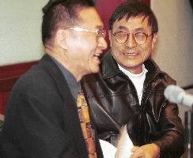
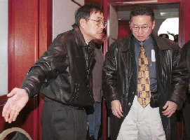

|  |
|
影視界名人劉家昌（右）上午召開記者會，公開支持新黨總統候選人李敖（左），兩人不計前嫌會中有說有笑，並砲打連、宋、扁陣營。
（記者簡榮豐 攝影）
|
記者劉建宏 報導
新黨總統候選人李敖上午和導演劉家昌一起舉行記者會，劉家昌除了向李敖道歉之外，也聲稱「家中至少有1票會投給李敖，但是他還是支持連戰！」劉家昌並當場邀李敖對賭，若李敖得票超過5%的門檻，劉家昌自願給李敖5百萬元，反之李敖要給劉家昌5萬元。
李敖表示，他曾經揭發劉家昌和國民黨針對博新公司進行「五鬼搬運」，賺了7億元，後來，劉家昌為此氣憤不已，還在媒體面前公開罵他是狗，「現在，劉家昌要向狗道歉了！」劉家昌則公開了1封道歉信，「因誤會你登報，罵了你一頓，回家被我老婆罵了一頓……，相信你不會跟我計較的，我犯了錯，你打我屁股好了……」
|  |
|
影視界名人劉家昌（左）上午與新黨總統候選人李敖（右）共同召開記者會，會前請「李總統」先行入座表明支持李敖。
（記者簡榮豐 攝影）
|
劉家昌說，他基於和李敖之間的情誼，家中有30多票，至少有1票會投給李敖。不過，他是「支持李敖，投給連戰」。李敖則開玩笑，新黨也是「支持李敖，投給宋楚瑜」。
雖然劉家昌支持連戰，但是上午他對國民黨也多所批評。劉家昌說，他在報紙上登了4次廣告，愈登愈小，一直等待國民黨回應，卻始終沒有回音。他每次看到國民黨的廣告就很生氣，實在是太爛了！「我的廣告可以拿去『利用』，放大登啊！」
劉家昌也提到，這次的總統選舉淪為口水戰，一直在提男女之間的關係，實在很無聊。「柯林頓在辦公室吹喇叭又怎麼樣？我們是要選有能力的人！」劉家昌說，他雖然支持連戰，可是，他對李敖的一國兩制政策就相當支持，因為，這是實際的，可以實現的。國民黨、共產黨總有一天會垮台，大家都是同一個祖宗，何必為了1個名詞去爭辯？
※劉家昌盼馮滬祥
不要打落水狗
劉家昌砲火也掃到李敖的副手馮滬祥。劉家昌說，馮滬祥就像是得了「李癌」，連講1顆大白菜，最後也可以轉彎去罵李登輝。「李登輝馬上就要下台了，大家都已經忍了12年了，再等幾天又怎麼樣？誰不討厭李登輝？不要落井下石，更不要打落水狗！」(2000/03/09/勁報)